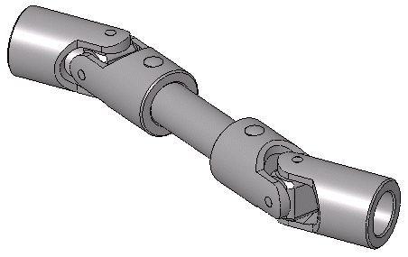

Universal Joint Mate
In a Universal Joint mate, the rotation of one component (the output shaft) about its axis is driven by the rotation of another component (the input shaft) about its axis.

Example:
-
Part creation
-
Universal joint without using universal joint Mate
-
Using Universal joint Mate